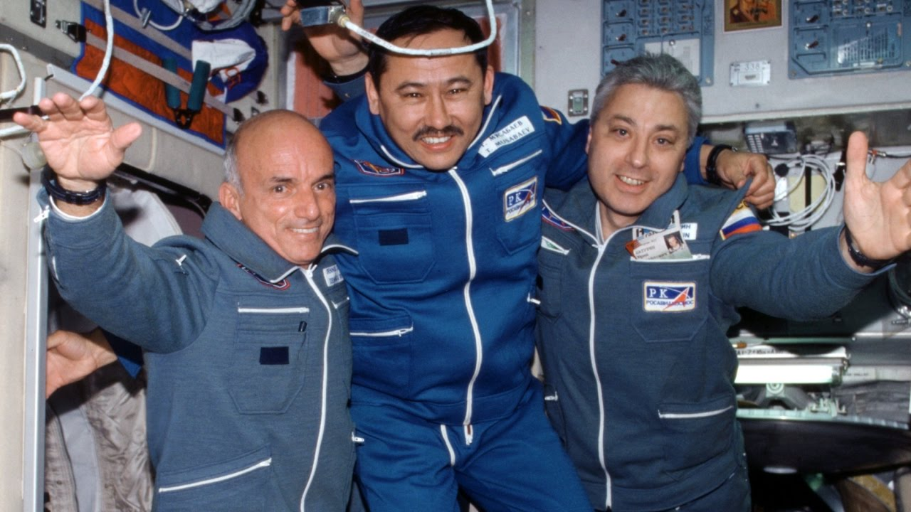
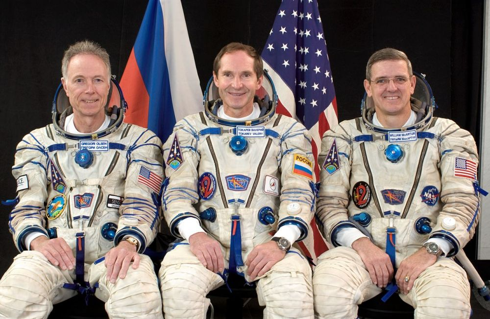
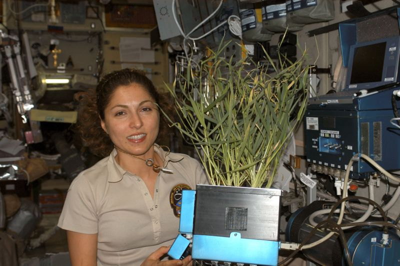
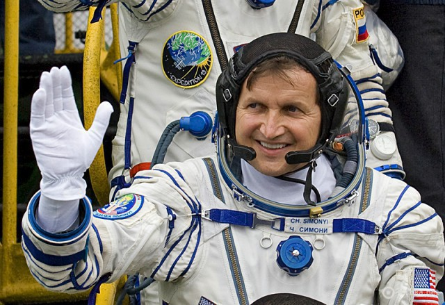

Space Tourists

Dennis Tito
On April 28, 2001, the Russian Soyuz TM-32 spacecraft launched from the Baikonur cosmodrome. On board was the first space tourist in history - American millionaire Dennis Anthony Tito. Kazakh and Russian cosmonauts Talgat Musabaev and Yuri Baturin were on the ship with the tourist.

Mark Shuttleworth
The second space tourist was South African businessman Mark Shuttleworth, who flew to the ISS on April 25, 2002 (completion of the flight on May 5). The Soyuz TM-34 crew, on which Mark Shuttleworth flew, also included Russian cosmonaut Yuri Gidzenko and Italian Roberto Vittori. For the flights, both paid the Federal Space Agency of Russia $ 20 million.

Gregory Olsen
On October 1, 2005, American businessman Gregory Olsen took off to the International Space Station; landing took place on 10 October. Initially, he was not allowed to fly for medical reasons, but later received permission. The Soyuz TMA-7 crew that Olsen flew also included Russian cosmonaut Valery Tokarev and American astronaut William MacArthur.

Anushe Ansari
On September 18, 2006, the first space tourist, Iranian American Anushe Ansari, was launched; landing took place on September 29th. Ansari, 40, underwent training in Russia and at NASA's Houston Center. Until the end of August, she remained just a backup for the Japanese businessman Daisuke Enomoto, who also wanted to fly into space, but was ultimately not allowed to fly due to health problems.

Charles Simonyi
April 7 - April 21, 2007 - the flight of the American billionaire of Hungarian origin Charles Simonyi. Experiments were planned for him by order of the European Space Agency (studies of the effect of weightlessness on blood), as well as according to his own scientific program (the effect of radiation). The Soyuz TMA-10 crew, on which Charles Simonyi flew, also included Russian cosmonauts Fyodor Yurchikhin (spacecraft commander) and Oleg Kotov (flight engineer).